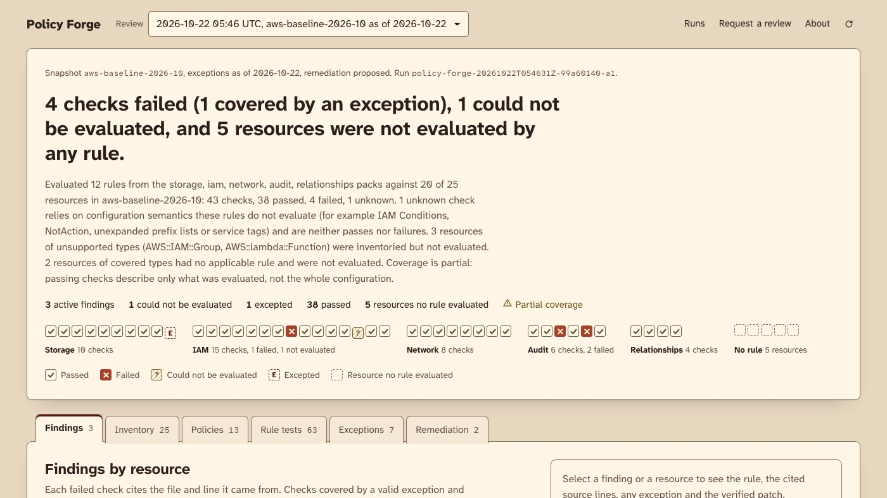

Python · Security · 2026-10
Policy Forge
An offline cloud-security configuration review: Bash and PowerShell adapters, 13 OPA/Rego rules whose findings cite the exact source line, expiring exceptions, and remediation patches verified by re-running the review.

- Problem
- Cloud misconfiguration reviews tend to produce a long list of red rows with no way to check them: which line of which export says this bucket is public, and would the suggested fix break…
- Role
- Built and written by Rishit Raj Mathur; the case study names its sources and checks.
- Tools
- Python, Open Policy Agent, Rego, Conftest, Bash, jq, PowerShell 7, React, TypeScript
- Status
- Case study with a live demo; last push 2026-10-22
- Evidence
- Browse the review desk · Code on GitHub

- Repository
- github.com/mrrishit909/policy-forge
- Commits
- 9
- Last push
- 2026-10-22
- Created
- 2026-10-22
- Languages
- Python 52%, TypeScript 22%, Open Policy Agent 10%
The three snapshots are synthetic exports of a fictional organisation, with planted fake secrets that exist only to prove redaction works. No real cloud account is read or changed, and no upload path exists.
01The problem
Cloud misconfiguration reviews tend to produce a long list of red rows with no way to check them: which line of which export says this bucket is public, and would the suggested fix break something else? The question here is whether a review can be run fully offline on exported configuration, cite the exact source line for every value it judges, say plainly what it could not evaluate, and only offer a patch after proving that the patch fixes the finding without changing any other result.
02What I built
Two adapters, a Python core, a bounded Rego policy set and a static review desk:
- Three synthetic snapshots: an AWS baseline, the same AWS estate after drift, and an Azure lab.
- Adapters: Bash and jq for AWS-CLI-shaped exports, PowerShell 7 for Azure-PowerShell-shaped exports, both writing one normalized inventory.
- Python core: source-line resolution for every cited value, redaction of sensitive fields, a relationship graph between resources, the exception registry and remediation.
- 13 Rego rules across storage, IAM, network, audit and relationship packs, each with a catalog entry and positive, negative and boundary fixtures; Conftest checks the inputs and the exception registry.
- Verified remediation: every proposed patch is applied to a copy of the snapshot and the whole review re-run before it is offered.
- A review desk showing the coverage tally, findings with cited lines, inventory, policy catalog, the rules' own tests, exceptions and a downloadable
remediation.patch.
03How it was built
- 01
Read exports with the tools each cloud's admins already use
The AWS adapter is Bash and jq; the Azure adapter is PowerShell 7. Both are tested (bats and Pester) and both write the same normalized inventory, so the Python core never needs to know which cloud the data came from.
- 02
Resolve every value to its source line, then redact
Python records the exact line in the exported file for each value a rule will judge, so a finding can point at it. Sensitive fields are redacted on the way through; the snapshots carry planted fake secrets precisely so the redaction can be shown to work.
- 03
Evaluate a bounded set of rules, and say what was not evaluated
OPA runs 13 Rego rules. Semantics the rules do not model (IAM Conditions, NotAction, permissions boundaries, Azure conditional assignments, unparseable policy documents and more) produce "could not be evaluated", never "passed". Unsupported resource types are inventoried and marked, so coverage is partial and every output says so.
- 04
Let exceptions expire
Exceptions live in
exceptions/registry.json, are narrowly scoped and carry an expiry date. Conftest checks the registry itself, and reviews are evaluated as of a stated date. - 05
Verify a patch before offering it
Each proposed remediation is a desired-state edit of the captured JSON. It is applied to a copy of the snapshot and the full review re-run; a patch is only offered if the finding is fixed and no other rule's result changed. Acceptance is strict, so a patch that would also improve another result is rejected and reported.
- 06
Run reviews through GitHub
A review is requested with the Policy review request issue form; the owner's run automatically, others wait for a
job:approvedlabel. Results and release records live on thestatebranch.
04Results
All packs, remediation proposed, exceptions evaluated as of 2026-10-21:
| Snapshot | Resources | Failed / unknown / passed | Excepted | Patches verified / rejected |
|---|---|---|---|---|
| aws-baseline-2026-10 | 25 | 3 / 1 / 38 | 1 | 2 / 0 |
| aws-drifted-2026-10 | 45 | 18 / 14 / 49 | 1 | 8 / 3 |
| azure-lab-2026-10 | 42 | 11 / 10 / 21 | 1 | 5 / 0 |
Coverage is partial for every snapshot. The three rejected patches would each have changed another rule's result, so they are reported, not offered. Wildcard IAM findings have manual guidance only.
05What I'd do next
- Widen the rule set to the gaps the catalog lists: account-level S3 Block Public Access, object ACLs, SCPs, permissions boundaries, NACLs and route tables, CloudTrail event selectors and retention.
- Evaluate IAM Conditions and Azure conditional assignments instead of marking them unknown.
- Run the optional AI grader once an inference secret is configured, and record in each release whether it ran.